Tesseract VP turns a Fire TV Cube into an HDR video processor. At its heart is its own tone-mapping engine, written from the ground up for the Cube, that fits every HDR frame to your screen's real brightness: in the streaming apps, Kodi and the HDMI input. Below is everything it does today, with each feature's status, what was measured, and what it costs the Cube.
Needs a Fire TV Cube (3rd generation) that is unlocked and rooted. The unlock is a third-party tool, used at your own risk. Testers wanted: the testing guide says what to try.
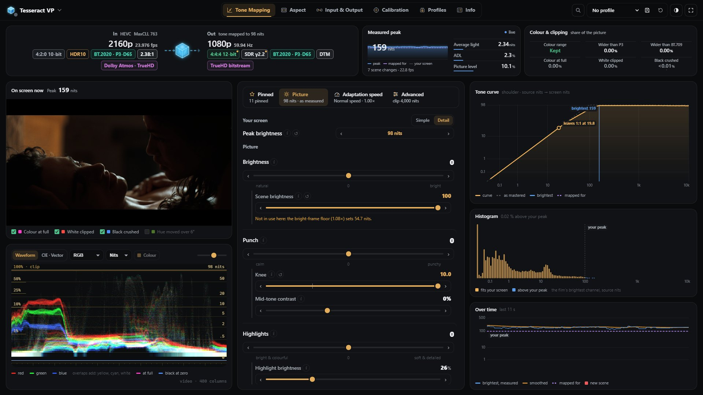
HDR10 film frames tone mapped for a 100-nit projector at the default settings. Each picture shows the HDR source as encoded beside Tesseract VP, with a waveform under each: these masters reach from about 600 to over 9,000 nits, and Tesseract VP fits each one under the screen's 100-nit peak.
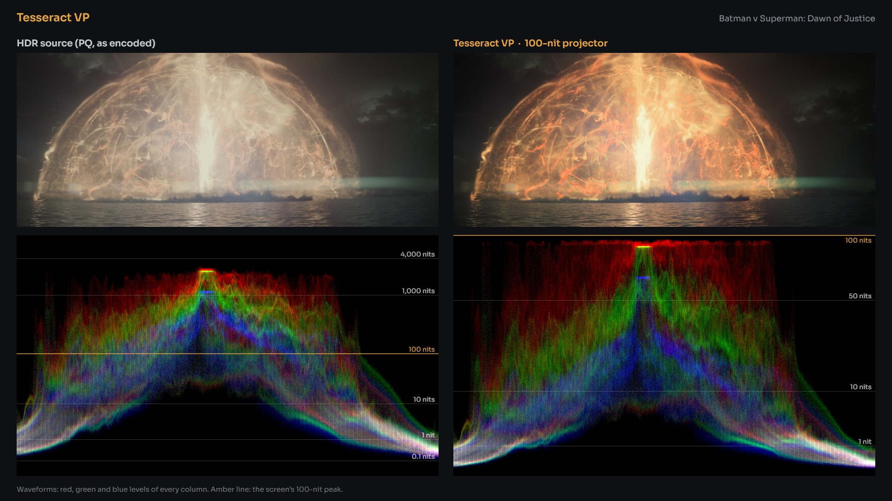
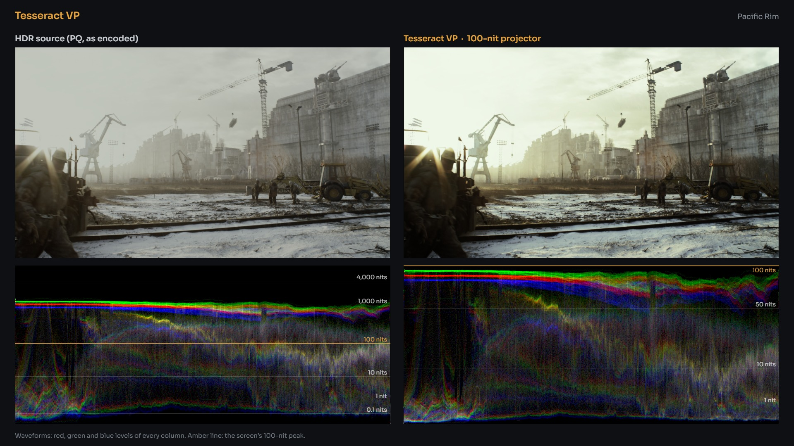
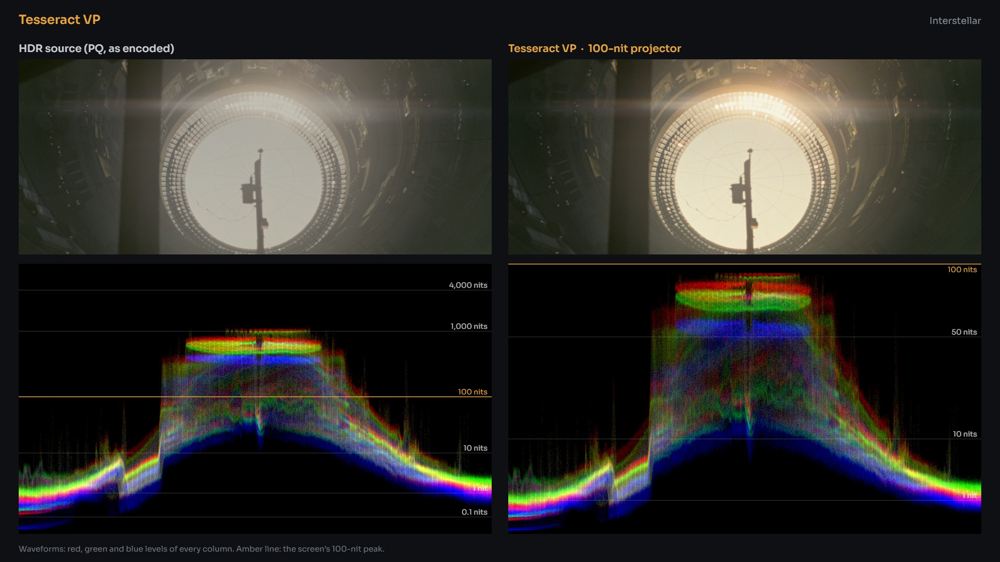
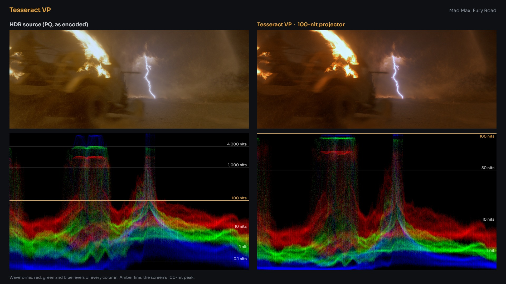
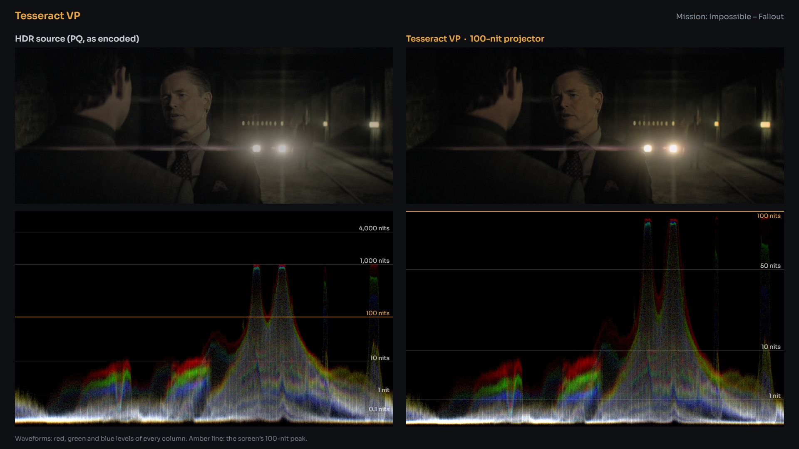
Every HDR picture fitted to the screen's real brightness, frame by frame, with a curve shaped to each scene. The tone mapping is Tesseract VP's own engine, written from the ground up for the Cube and its video hardware. It is the heart of the VP.
Tesseract VP's own tone-mapping engine, written from the ground up for the Cube. Each 4K frame is measured in full and gets its own curve, applied by the video hardware to that frame. A scene that fits the screen is shown 1:1, as mastered. One that doesn't is compressed to fit, as gently as possible: as much of the picture as it can stays 1:1, the rest (mid-tones included when the scene is far brighter than the screen) is brought down smoothly, and highlights roll off instead of hard clipping.
Measured: on a 26-bar test ramp every bar landed within one code of the prediction.
Cost: about 1 % of the CPU for the curve itself.
Films are measured several frames before they are shown, so a scene cut gets its own curve on its first frame and a lightning flash doesn't dim the shot around it.
Cost: about 3 ms of one core per frame; no added delay.
The full-resolution peak of the frame on screen is checked as well, so a highlight smaller than the look-ahead's copy can see isn't missed.
Burned-in white or yellow subtitle text at the bottom of the picture, and in the bars, is ignored when the frame is measured, so subtitles don't dim the film. The Ignore subtitles setting is on by default.
The very brightest cores ease towards white the way real light does, late and hard at the top, so fire and lightning read hot while the glow keeps its colour. Highlights whiten gently without shrinking the gamut. A clip guard keeps every channel just below full on bright scenes, so a saturated colour keeps its texture.
Highlights keep their shape right up to the screen's peak. Deep shadows stay deep, and bright scenes keep their shadow detail. Highlight colour is fitted to the gamut, so saturated skin doesn't band.
A new scene must differ from the last half second, not just the last frame, so strobes and explosions don't reset the picture ("Ignore busy action"). The peak rises in about 0.35 s and relaxes over about 2.5 s within a scene; a real cut resets at once.
At film frame rates anything graded brighter is treated as 4,000 nits, so the hottest cores go white together and the rest of the frame gets more room. Games keep the full range.
Films carrying HDR10+ metadata get our curve from their HDR10 base, like any HDR10 film, instead of taking the chip's own route.
Checked on 1917: tone mapping live, peaks measured, plain HDR10 unchanged.
The tone-mapped picture goes out as SDR, or as HDR10 aimed at the display's peak. In HDR10, menus and subtitles are converted in at graphics white.
For films mastered with a raised black. The film's darkest level is learned over the whole title (its bars, if it has them), not shot by shot, and only the lowest seen counts. It is taken off the darkest levels only, at most 0.1 nits, fading in over about 20 s. Foggy and night scenes stay as graded.
Checked: The Dark Knight's true-black bars, nothing taken off.
Eight controls: Brightness, Punch, Highlights, Highlight colour, White-hot, Clip guard (default 65 %), Shadows and Depth, each with the tuned setting in the middle. Scene brightness and adaptation speed sit beside them, with further fine controls in the Detail view. Every change ramps in smoothly, with no flicker.
Depth adds local contrast and shadow separation to the curve.
Two projectors, each fed by its own Cube. Stacked: both show the whole picture, for twice the light. Split: one carries the picture and the other only the highlights, and they add back to the full picture with colours unchanged.
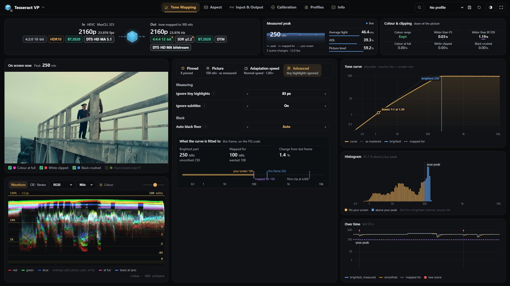
Netflix, Disney+ and YouTube in 4K HDR, tone mapped like any other source, without upsetting their copy protection.
Netflix 4K HDR10 and Disney+ 4K HDR10 through our tone mapping; YouTube 4K HDR10 too. Dolby Vision titles get a choice: our tone mapping, Dolby's own mapping, or Dolby Vision out to the display.
DRM frames can't be read by software, so they are measured in the video hardware a few frames before they reach the screen. It switches itself on whenever protected video plays.
Measured: Disney+ 4K 99.5 % of frames with their own curve; Netflix 95–97 %; Mad Max on Kodi 99 %, matching software measurement frame for frame, ~3 frames ahead, no flicker. 4K kept, no protection errors.
Cost: no CPU; one more 4K read by the video hardware.
The control page and overlay say "protected" instead of showing green; tone mapping, histogram and curve stay live. Fire OS's 4:2:0 resets are corrected back to 4:2:2 12-bit. A frame-rate switch waits until the app's DRM sees the HDMI link protected again, because an HDCP drop while Netflix decrypts can cap the Cube to HD for about an hour.
Protected films have their black bars found in hardware too, so Auto aspect works on Netflix and Disney+.
Measured: The Dark Knight reads 2.40:1, the same as software measurement.
A console on the Cube's HDMI input, tone mapped live with very little lag.
The Xbox's 4K60 HDR10 gets a curve made from each of its own frames. The Cube offers the console HDR10, which Fire OS hid.
Game mode runs the input in the hardware's fast path with frame lock. Low latency Off / On / Auto: Auto follows the console's ALLM flag.
Measured: about 7 ms from a frame's arrival to the screen, against 41 ms with look-ahead; about 12 ms inside the Cube on the ALLM fast path.
With low latency off, each frame is measured as it arrives and sees up to two coming frames, at no added delay.
Measured: 603 of 603 frames.
The output follows the input's timing, so every frame reaches the screen once. Free-running, the clocks drifted enough to drop or repeat a frame about every 25 minutes.
Measured: locks within about 40 s and holds; 26 ms input to screen instead of 41.
Cost: almost none.
Match sound (the picture waits for the HDMI audio path, 52–66 ms) or Lowest lag.
What the source is told, built from the receiver's EDID so its sound formats and Atmos pass untouched: resolutions, refresh rates, HDR10 / HLG / SDR only, peak and black, 4:2:0, bit depth and ALLM.
Tested: the Xbox told 100 nits / 0.05 nits came back at 4K60 HDR10.
The HDMI input runs only while the HDMI player is in front; four seconds of another app turns it off, so a restart doesn't reopen the input over a film.
The delay Tesseract VP adds is measured live and shown while the HDMI input runs. The display's own share needs a light sensor on the screen.
The Cube's HDMI output can't carry variable refresh rate.
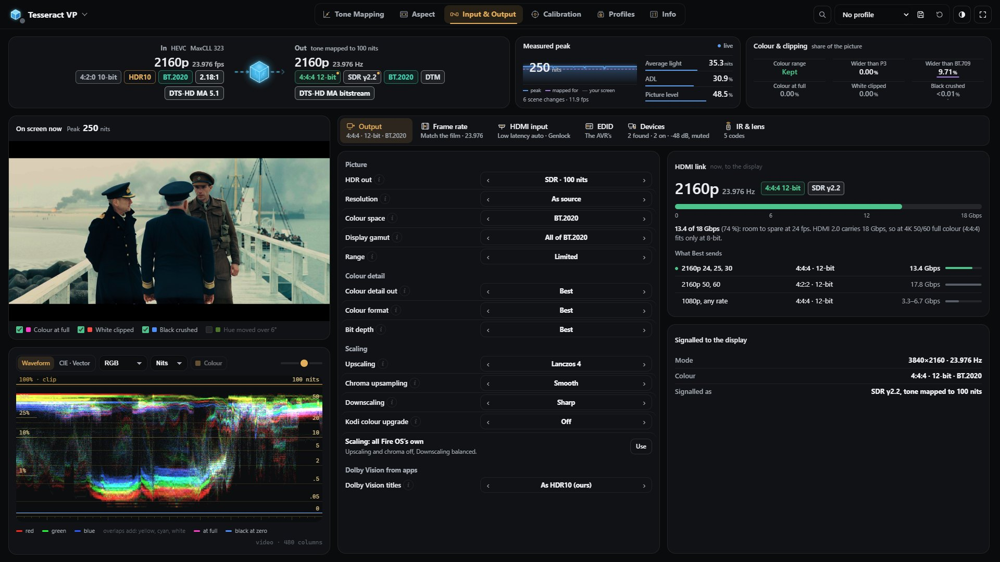
Full control of the signal that leaves the box.
"Match the film": each film plays at its own rate, read from the decoder before its first frame. Streaming apps are included: the switch waits until the app's DRM sees the HDMI link protected again, the picture holds for under 3 s, and the sound carries on. At film rates the output goes to 4:4:4 12-bit in the same switch.
Measured: 23.976 and 24.000 told apart; four Netflix films in one session at 24.000, 23.976 and 25, all in 4K, no protection errors; back to 59.94 at Home within 2 s.
Disney+ switched on every chain we tested, with Atmos kept. Netflix switches where the HDMI handshake is quick: straight into a display, or through a fast receiver (23.976, 24 and 25 tested in 4K with Atmos). Through slower receivers it stays at the usual rate by itself, or you can choose Always try. Next: the right rate set before the film starts, through more receivers.
Colour format (Best, 4:4:4, 4:2:2, 4:2:0, RGB), bit depth (Best, 12, 10, 8), resolution (as source, 2160p, 1080p), refresh (Match the film, as source, 60, 50 Hz) and colour space, applied over whatever the app picks and lowered automatically to what HDMI 2.0 and the display carry.
BT.2020 out: menus, SDR and the HDMI input converted in, so they don't look oversaturated (the red Netflix logo). BT.709 out: films' wider colours mapped in along constant hue rather than clipped. Auto: each signal flagged as what it is.
Cost: one table, rebuilt in about 3 ms when the content changes.
Fire OS's HDMI driver has no FRL training, so the Cube runs HDMI 2.0: 4K60 at 4:2:2 12-bit or 4:4:4 8-bit; 4K120 is out.
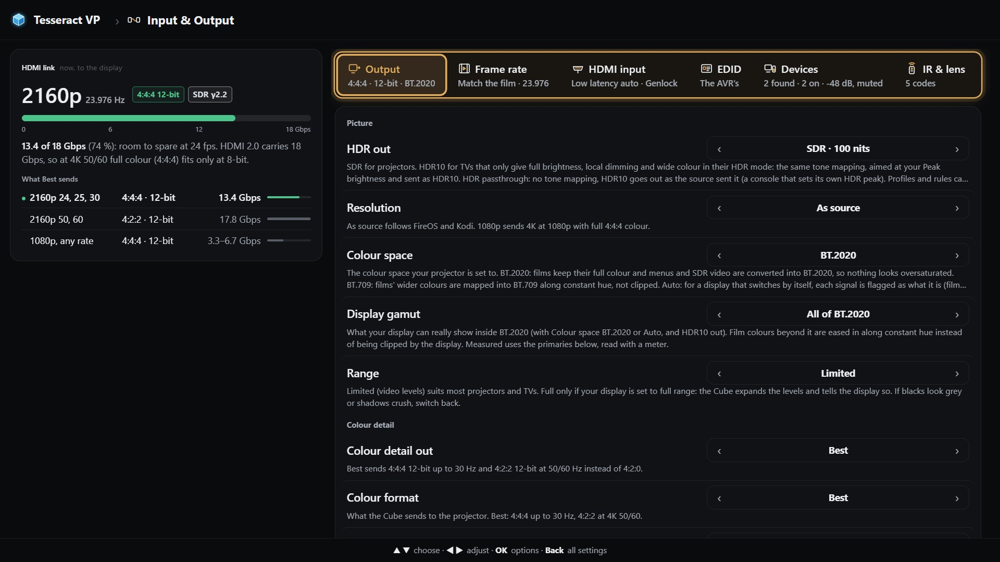
Scaling and colour detail, mostly in the video hardware at almost no CPU cost.
A choice of upscalers: Lanczos 4, Lanczos 3, Bicubic, Soft and the super-scaler, switched live in the hardware. Lanczos 4 is the default.
Cost: almost none.
Tesseract VP's own GPU upscaler for Kodi's 1080p SDR films, up to 30 fps: Lanczos 4 with anti-ringing, then steps that smooth jagged edges and rebuild colour along the edges, out at 4K 10-bit 4:4:4. It fits as many steps as each frame rate allows, and everything else (HDR, 50/60p, the streaming apps, protected video, the HDMI input) keeps the hardware Lanczos 4. In Nightly, with Kodi's colour upgrade switched on.
Measured on a 1080p24 film: about 36 ms a frame on the GPU, and every frame shown in 4K over a 90-second run.
Cost: about 36 ms of GPU time a frame at 24p, and about a quarter of one CPU core while it runs.
4K films' colour is interpolated up to full resolution instead of repeated, then goes out at 4:4:4 12-bit.
Cost: almost none.
1080p and smaller films in Kodi get their colour rebuilt to full 4:4:4 on the Cube's GPU, live on every frame.
Measured: 17 ms per 1080p frame.
Anti-aliased, with 4K's colour landing as true 4:4:4 1080p. Studied and tried: the Cube's hardware can't run it at full quality yet, so it stays out until it can.
Studied and tried: the Cube's hardware can't run it at full quality yet, so it stays out until it can.
Smoothing gradient banding without softening edges. Studied and tried: the Cube's hardware can't run it at full quality yet, so it stays out until it can.
Every picture fitted to the screen, for every source, on the frame its shape changes.
Every source is checked for bars as it is measured: apps, Kodi, the HDMI input, protected streams and Dolby Vision, FEL included. The ratio follows within 2 frames when the picture opens up and 6 when it narrows; films are measured about 10 frames ahead, so a change of shape (an IMAX scene) is known before it reaches the screen. Subtitles in a bar don't fool it, and frames darker than 8 nits don't count as bars. Fast and Precise modes.
Measured: 1917 reads 2.38:1.
Fill, picture to the top or bottom, anamorphic lenses (1.25, 1.33, 1.5x) and masking of each edge, applied below every app so apps, Kodi and the HDMI input all get it.
Scope zoom for 2.35, 2.37 and 2.40 screens, with 1.85 and 16:9 fitted in with side bars or a non-linear stretch (the middle keeps its shape). "Only for pictures wider than…" rules and a manual override.
Burned-in subtitles in a bar are recognised; the bar is measured past them, and Fill keeps just enough of it for the text until the film ends. A strip that never goes away, like a console menu header, isn't mistaken for subtitles.
Warps the picture onto the screen in the Cube's own warp hardware: drag the corners and edge points of a 12-point or finer grid to fix keystone, curved screens, or pincushion and barrel from a lens.
The projector's own lens memories are recalled when the film's shape changes, on projectors Tesseract VP can control over the network. Recall by hand from the remote too.
Red, green and blue each shifted by fractions of a pixel, zone by zone, for three-laser projectors.
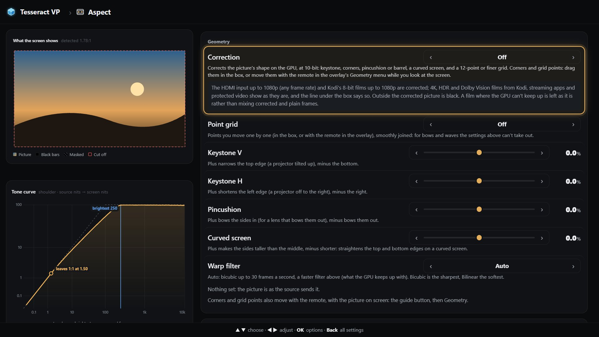
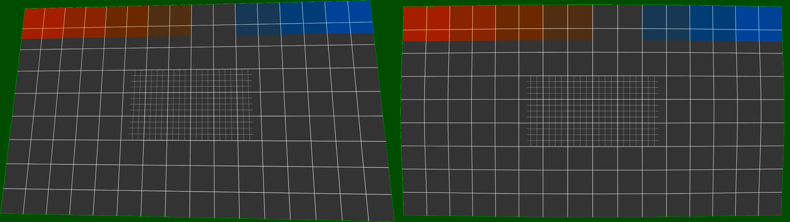
One choice for Dolby Vision titles, and full-enhancement-layer films at their full quality.
Off (HDR10): our tone mapping. LLDV: Dolby's processing, finished by our tone mapping. Dolby Vision: Dolby's processing end to end, to a Dolby Vision display. Live for the streaming apps and Kodi, through an AV receiver too. The HDMI input takes HDR10.
Dolby Vision from the apps and Kodi arrives as low-latency Dolby Vision, and our tone mapping finishes it at 24 fps, zoom included.
Full FEL films are rebuilt to their 12-bit picture in a player that supports it (Kodi FEL, VLC FEL or Wholphin FEL), then sent as Dolby Vision to the display or tone mapped by us. Tesseract VP Setup installs Kodi FEL in one step and can copy your Kodi library into it.
Sound kept intact through every switch, and bitstreamed as it was mastered.
When the output switches rate, the brief HDMI "unplugged" notice is held back so apps don't stop; the "plugged" notice always goes through, so Kodi's passthrough isn't lost.
Dolby TrueHD Atmos, DTS-HD Master Audio and DTS:X go to the receiver untouched, bitstreamed. It is built into Tesseract VP: nothing else to install, and it stays up to date with it. The signal card shows the format going out: codec, channels, Atmos or DTS:X.
Measured: TrueHD 8-channel (1917) and DTS-HD MA 8-channel (Alien), both at 192 kHz, through the 24 Hz switch.
Fire OS converts DD+ Atmos to a fixed 5.1.2; Tesseract VP sends the original stream instead, so Dolby Atmos from Netflix and Disney+ arrives at the receiver as Atmos.
Corrections in the Cube's output, finer than the display's own controls, held for every source.
Black level, white level and gamma; red, green and blue gain and offset; in tenths of a level and tenths of a percent, per preset.
Measured on the output: black +5 lifts black by 5.8 levels; white 95 % lowers the picture 4 %.
Cost: none; part of the output table.
Limited or Full, with the HDMI flag to match.
Checked: black at code 16 in Limited, 0 in Full.
Colours are held inside BT.709, DCI-P3, BT.2020 or the display's own measured primaries.
Ramps, windows, average-light patches and single-pixel 4K checks, in SDR and HDR, shown tone mapped or untouched.
Each has its own calibration set, picked by what is playing.
Each calibration set takes its own 3D LUT and a separate greyscale and gamma table in front of it.
The Cube speaks the network pattern protocols that calibration software uses (Resolve, PGenerator and UPGCI), for Calman, HCFR, DisplayCAL and ColourSpace. Checked with protocol test tools; not yet confirmed with each program.
For displays with dynamic contrast or laser and backlight dimming: leave room in dark scenes so their brightness lift doesn't clip highlights.
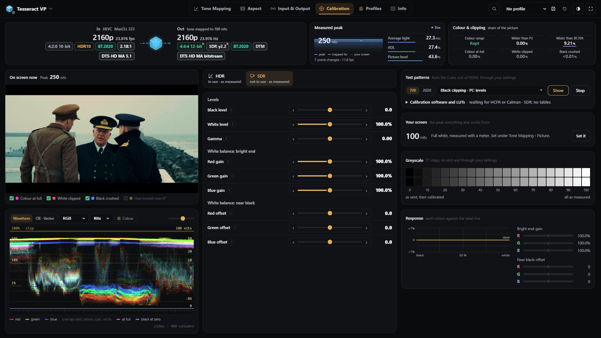
Every setting reachable from a browser, the remote, a phone or a home-automation system.
Tone Mapping, Aspect, Input & Output, Calibration and Profiles; the live picture, waveform and tone curve stay in view while settings change, and the page's picture shows the menus and subtitles on screen too. Every setting is one line with help on hover.
A quieter control page: colour lives in the signal chips and the measured data, no glows or busy boxes, and the tesseract lights blue only while it converts something. Colour standards are written in full (BT.709, BT.2020). On a phone labels and values aren't cut, the settings come straight after In and Out, and the sections sit in a tab bar at the bottom.
Everything on the control page is on the remote too, drawn over the film with the signal in and out, a live waveform, the tone curve, the measured peak and the Picture controls.
The control page's settings at TV size, worked with the remote, from the launcher's Settings tile.
Game, HDMI, Film, Video and SDR each load a preset when the source changes; a change by hand stays until the next source change.
The HDMI chain in signal order, with each device's power, name and input, On/Off, Show, the amp's volume and mute, All off. One press of the remote's power button wakes or sleeps the display and amp with the Cube; remote volume can go straight to the amp.
Cost: a scan every 10 s, only while the Devices card is open.
The display and amp turn on for a remote press or a scene, not because the Cube woke up on its own.
Boots to Tesseract VP's own home: the glowing cube with the Cube's name, a clock with your HDMI devices, your own apps on the home row, a Last played strip and one Settings tile for everything. Home from Amazon's screen comes back to ours.
Memory: 24 MB, against 113 MB for Amazon's home.
Finds every Tesseract VP on the Wi-Fi; tap for the control page, long-press for the on-screen display.
Movie night wakes the projector and amp, picks the input and dims the lights; Off puts it all to sleep. From the phone app, a home-screen widget or a quick-settings tile.
Optional, off by default: the phone app tells you quietly, once, when an update didn't install, a version was rolled back, or the Cube restarted unexpectedly or stopped answering.
Source, playing, HDR type, output mode, picture shape and tone-mapping state, pushed to Home Assistant or any webhook as they change, or polled. The API is documented with a Home Assistant example.
Every Tesseract VP on the network, one click away from the control page's name menu.
Learn any IR remote's buttons, send them through the Cube's IR blaster, and tie them to what plays: lights off when a film starts, back on when it stops. Codes can be copied from another Cube.
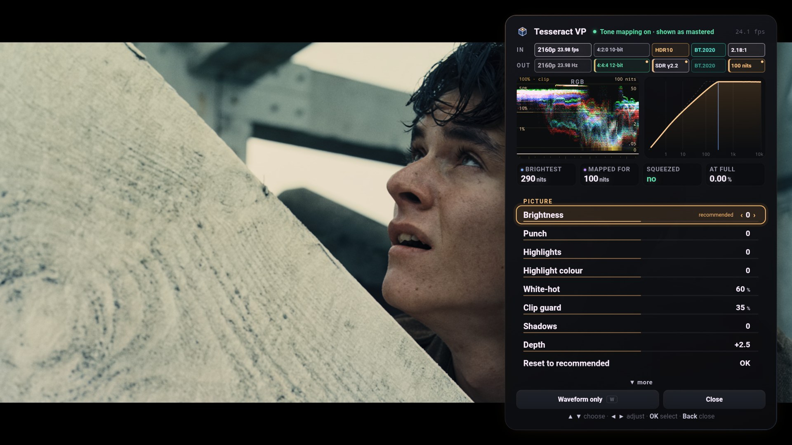
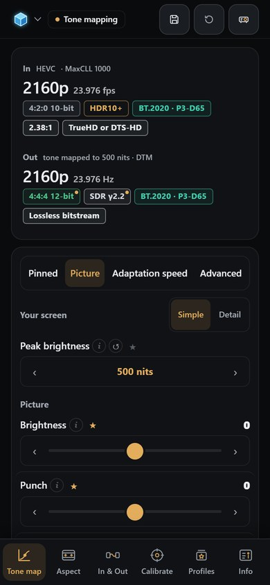
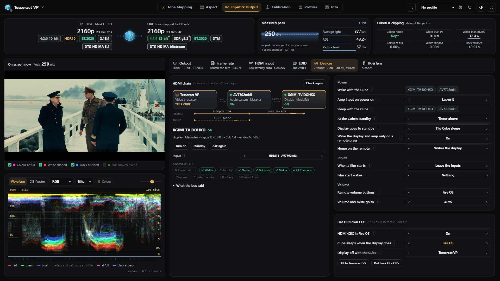
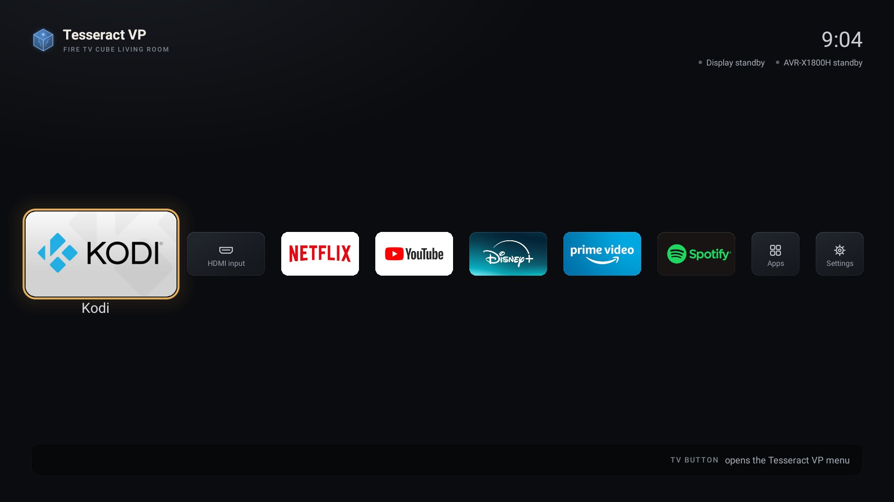
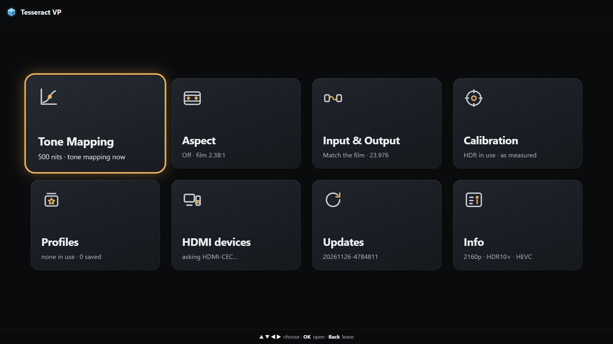
From a new Cube to a running VP with one app, and updates that roll themselves back if they fail.
A Windows app with a button for every step: check and prepare, back up with app logins, unlock, install with tick boxes, restore, restart, roll back, uninstall. Display setup is part of it: peak, colour space, receiver, ADB kept on, or a copy of another Cube's settings. Every Cube tweak is in the installer: Fire OS updates and rescue party off, the remote's key filter, Equipment Control backup.
Cubes update themselves from the public GitHub releases, Stable or Nightly. Every release is signed and its files checksummed; a Cube refuses anything that doesn't match. Stable is checked daily and isn't installed by itself. Updates keep the parts you installed up to date too, such as Dolby Vision FEL and lossless audio. Releases ship without debug information.
Tested: the projector Cube follows Nightly from GitHub.
One download, Tesseract-VP-Setup.exe: it installs for your account with no administrator prompt, with a Start-menu shortcut and an uninstaller. Google's platform-tools are downloaded on first use and checked, so there is nothing else to fetch. Backups are kept in Documents.
The version in use is kept for a one-step roll back; a watchdog restarts the VP if it stops and puts the previous version back if a new one keeps failing; a module that won't load at boot falls back to the last good one.
Every setting, preset and profile as one file, restorable on this or another Cube.
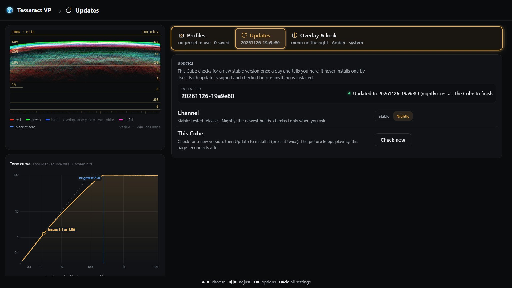
The video hardware does the pixel work, so most features cost little or nothing while a film plays. Figures measured on the Cubes; the Cube has 8 cores.
| Feature | Cost | Notes |
|---|---|---|
| Tone curve, every frame | ~1 % CPU | The engine itself, 10 MB of memory. |
| Film look-ahead | ~3 ms / frame | One core, no added delay. |
| Protected look-ahead, protected bar detection | 0 | Video hardware only. |
| Aspect, masking, scope zoom | ~0 | Applied once per frame where the picture is placed. |
| Genlock | ~0 | Almost nothing while it holds the lock. |
| Upscaler, chroma upsampling, calibration, range | ~0 | Hardware settings and the output table. |
| Colour space table | ~3 ms | Only when the content type changes. |
| 1080p colour upgrade | 17 ms / frame | GPU; 1080p and smaller films in Kodi. |
| Kodi 4K upscaler (Nightly) | ~36 ms GPU / frame | 1080p films up to 30 fps; about a quarter of one core. The GPU runs at full clock while it works. |
| Scopes on screen | a tenth of a core | Only while open; was a whole core. |
| CEC device list | small | Only while the Devices card is open. |
| Whole box, 4K60 game tone mapped, scopes open | 29 % of 8 cores | Over two thirds of the CPU left idle. |